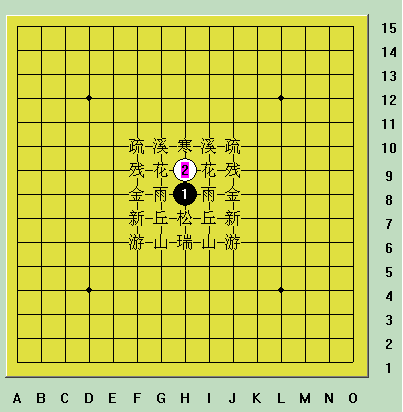
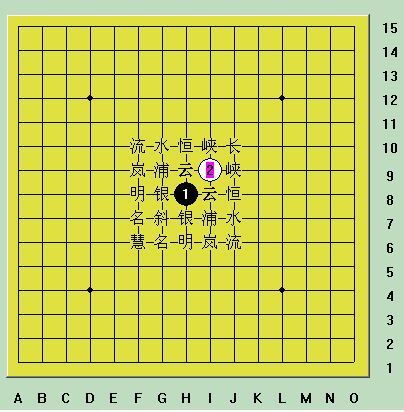
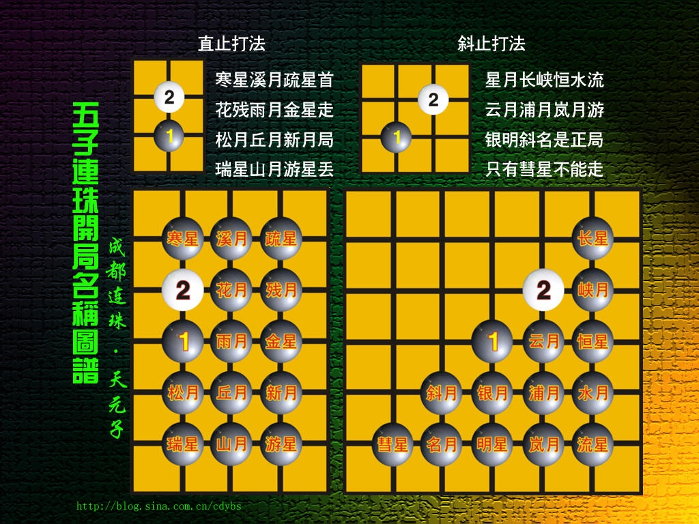

26种开局助记图
#1 26种开局助记图作者：星尘 发表时间：2006-9-27 11:29:10
先附上彭建国编写的《彭氏口诀》：
寒星溪月疏星首，花残二月并白莲，
雨月金星追黑玉，松丘新宵瑞山腥。
星月长峡恒水流，白莲垂俏云浦岚，
黑玉银月倚明星，斜月名月堪称朋。
二十六局先弃二，直指游星斜慧星。
溪峡雨云(雲)形相似，子序不同略有别。
说明：
前4句为直指开局，与第1图对应；中间4句为斜指开局，与第2图对应；后4句是指开局时的取舍。
最后2句是本人加的，是指溪月和峡月、雨月和云月棋形相似，只是落子顺序不同，所以可看作同一开局。
黑玉指黑1，白莲指白2。
命名规则：
桂：桂马打，黑1、黑3成马步，“日”字形，以“月”命名。如“溪月”、“水月”。“新月”和“名月”统称桂马打的入门定式。
间：间打，黑1、黑3在一条直线上或一条斜线上，间隔一点，以“星”命名。如“寒星”、“长星”。
连：连打，黑1、黑3在一条直线上或一条斜线上，无间隔，以“月”命名。如“花月”，“云月”“浦月”。
建议初学者先仔细看完下面的贴子后再回来看本贴：
ShowPost.asp?ThreadID=90
助记图：
直指开局(左右对称)：

斜指开局(对角线对称)：

以下内容由网友：屏蔽发在本帖22楼
寒星溪月疏星首，花残二月并白莲，
雨月金星追黑玉，松丘新宵瑞山腥。
星月长峡恒水流，白莲垂俏云浦岚，
黑玉银月倚明星，斜月名月堪称朋。
不知道还有没有人知道这首诗的具体字面意思了：
比较上下两片，其实“白莲”指的是白2，“黑玉”指的是黑1。
寒星溪月疏星首：寒星局、溪月局、疏星局（在直指开局中排在）首位（指第一行，从而构成前三个直指开局D1、D2、D3）；
花残二月并白莲：花月局、残月局的黑3与白莲（白2）并排放置在同一行上；
雨月金星追黑玉：雨月局、金星局（的黑3）从黑玉（黑1）开始依次排列，两者紧靠故称“追”；
松丘新宵瑞山腥：（下一行依次为）松月局、丘月局、新月局（“宵”字去掉宝盖头，拆开即为“三”“月”），“山月”局二字插入“瑞星”局二字之间即为“瑞山月星”，星月二字合并为“腥”。
直指开局按照自左至右，自上至下的顺序排出12种，大家可以参看楼主的图。
星月长峡恒水流：星月（轮换对应）长星局、峡月局、恒星局、水月局、流星局；
白莲垂俏云浦岚：白2（白莲）向下（垂俏）依次排列为云月局、浦月局、岚月局，“俏”字去掉单立人也可拆为“三”“月”二字；
黑玉银月倚明星：黑3在黑1（黑玉）之下依次排列出银月局、明星局，两者相靠故称“倚”；
斜月名月堪称朋：斜月局、名月局排在最后，两个月字合并为“朋”。
斜止开局按照自上至下，自右至左的顺序排出12种，大家可以参看楼主的图。
此外还有直止游星局和斜止彗星局被研究为白必胜开局，增加这两种开局，总共为26种开局，直止花月局和斜止浦月局则被研究为黑必胜开局。
下图由“天元子”制作

天元子：感谢各位朋友多年来对本博的厚爱，本人无以回报，特制作五子棋开局图谱一个，献给广大的五子棋爱好者和多年来对本博给予大力支持的朋友们！
该图谱尺寸为1024*768像素【可右键点击图片另存为】，可做电脑桌面使用，便于刚接触五子棋的朋友下棋的时候随时查对。
［ 有志青年 于 2006-9-27 13:53:41 时奖励此帖[金币加 20 威望加1］
#2 Re:26种开局助记图作者：有志青年 发表时间：2006-9-27 13:53:35
这种形式比之前提供的更加直观！#3 Re:26种开局助记图作者：五子散人 发表时间：2006-11-5 6:36:02
学习使人进步！#4 Re:26种开局助记图作者：不速之鱼 发表时间：2006-11-13 13:24:56
八卦易守，成角易攻。
#5 Re:26种开局助记图作者：不速之鱼 发表时间：2006-11-13 13:27:14
好贴，顶！#6 Re:26种开局助记图作者：龙少天下第一 发表时间：2006-12-1 19:54:51
好东西!!!!顶#7 Re:26种开局助记图作者：voila 发表时间：2006-12-18 23:26:27
好好学习学习～～谢谢楼主指点。。。#8 Re:26种开局助记图作者：tf3373 发表时间：2006-12-21 14:47:16
才玩。什么也不太会，学习学习
#9 Re:26种开局助记图作者：tf3373 发表时间：2006-12-21 14:48:28
看不懂#10 Re:26种开局助记图作者：听雨练棋 发表时间：2006-12-22 8:48:08
学习使人进步.
#11 Re:Re:26种开局助记图作者：liuzic 发表时间：2006-12-24 17:31:23
谢谢楼主分享
#12 Re:26种开局助记图作者：cotton 发表时间：2006-12-25 16:03:09
来学习的,多给些
#13 Re:26种开局助记图作者：飞琼妙舞 发表时间：2006-12-29 23:11:38
赶快回帖学习#14 Re:26种开局助记图作者：伊888 发表时间：2006-12-30 16:28:40
学习
#15 Re:26种开局助记图作者：头发乱了 发表时间：2007-1-11 16:11:00
这才是我这样的菜鸟的乐园!
#16 Re:26种开局助记图作者：小阿臭 发表时间：2007-1-12 19:37:48
谢谢共享
#17 Re:26种开局助记图作者：小阿臭 发表时间：2007-1-12 19:38:35
背景的五子棋盘很好看啊，在哪里弄得打谱软件？#18 Re:26种开局助记图作者：聪明有余 发表时间：2007-1-29 11:18:54
非常感谢！好论坛
#19 Re:26种开局助记图作者：雷电风行 发表时间：2007-2-9 11:42:04
方便记忆！
#20 Re:26种开局助记图作者：rain 发表时间：2007-2-12 8:18:36
写的好啊！
学习先，谢谢楼主！！！
#21 Re:26种开局助记图作者：qjh 发表时间：2007-2-13 21:26:38
看不懂！
#22 Re:26种开局助记图作者：屏蔽 发表时间：2007-2-17 20:20:48
寒星溪月疏星首，花残二月并白莲，
雨月金星追黑玉，松丘新宵瑞山腥。
星月长峡恒水流，白莲垂俏云浦岚，
黑玉银月倚明星，斜月名月堪称朋。
不知道还有没有人知道这首诗的具体字面意思了：
比较上下两片，其实“白莲”指的是白2，“黑玉”指的是黑1。
寒星溪月疏星首：寒星局、溪月局、疏星局（在直指开局中排在）首位（指第一行，从而构成前三个直指开局D1、D2、D3）；
花残二月并白莲：花月局、残月局的黑3与白莲（白2）并排放置在同一行上；
雨月金星追黑玉：雨月局、金星局（的黑3）从黑玉（黑1）开始依次排列，两者紧靠故称“追”；
松丘新宵瑞山腥：（下一行依次为）松月局、丘月局、新月局（“宵”字去掉宝盖头，拆开即为“三”“月”），“山月”局二字插入“瑞星”局二字之间即为“瑞山月星”，星月二字合并为“腥”。
直指开局按照自左至右，自上至下的顺序排出12种，大家可以参看楼主的图。
星月长峡恒水流：星月（轮换对应）长星局、峡月局、恒星局、水月局、流星局；
白莲垂俏云浦岚：白2（白莲）向下（垂俏）依次排列为云月局、浦月局、岚月局，“俏”字去掉单立人也可拆为“三”“月”二字；
黑玉银月倚明星：黑3在黑1（黑玉）之下依次排列出银月局、明星局，两者相靠故称“倚”；
斜月名月堪称朋：斜月局、名月局排在最后，两个月字合并为“朋”。
斜止开局按照自上至下，自右至左的顺序排出12种，大家可以参看楼主的图。
此外还有直止游星局和斜止彗星局被研究为白必胜开局，增加这两种开局，总共为26种开局，直止花月局和斜止浦月局则被研究为黑必胜开局。
［ 有志青年 于 2007-2-17 20:28:27 时奖励此帖[金币加 20 威望加1］
#23 Re:26种开局助记图作者：海天涯 发表时间：2007-2-19 16:35:01
谢谢!!很适合我.
#24 Re:26种开局助记图作者：爱我的人 发表时间：2007-2-21 17:23:56
好,好,好.#25 Re:26种开局助记图作者：梓钰 发表时间：2007-2-23 13:34:19
什么也不太会，学习学习#26 Re:26种开局助记图作者：511 发表时间：2007-3-10 20:59:17
学习一下~#27 Re:26种开局助记图作者：dennis 发表时间：2007-4-15 12:40:42
原来在网上下下，还是胜率蛮高的，可以来这里看看，觉的还是菜鸟一个，多谢！#28 Re:26种开局助记图作者：星辰 发表时间：2007-4-19 20:51:52
好厉害！
学习！
看的我都花了！
#29 Re:26种开局助记图作者：风轻颜月 发表时间：2007-4-21 18:38:30
对照图看总算看明白，谢谢楼主啦！#30 Re:26种开局助记图作者：孤鹰 发表时间：2007-4-23 20:47:51
我太笨啊！还没看明白#31 Re:26种开局助记图作者：jackal 发表时间：2007-4-24 16:04:21
开局之后N,应如何配合使用?
#32 Re:26种开局助记图作者：jackal 发表时间：2007-4-24 17:16:38
呵呵,我是菜鸟,还是看不懂,其中之奥妙所在....望高手指点一二..
#33 Re:26种开局助记图作者：renji 发表时间：2007-4-26 14:40:12
助记图妙哉！妙哉！
#34 Re:26种开局助记图作者：弈中人 发表时间：2007-4-27 20:42:30
好啊 谢谢各位！ 一定好好学习#35 Re:26种开局助记图作者：冷血浪子 发表时间：2007-4-30 0:23:40
第一次来,虽然是基础帖,但是非常明详,真是好网站,不顶下都对不起!!!
我看流量好低,真办法,五子棋成者太少,希望各位老大努力,把五子发扬光大!!!
#36 Re:26种开局助记图作者：z40631 发表时间：2007-5-3 14:38:21
好啊#37 Re:26种开局助记图作者：shiqin 发表时间：2007-5-4 19:31:58
学习中希望有帮助
#38 Re:26种开局助记图作者：jinfu8 发表时间：None
五子棋26种开局助记图 #39 Re:26种开局助记图作者：亡命好又多 发表时间：2007-5-10 5:47:14 #40 Re:26种开局助记图作者：六子棋 发表时间：2007-5-12 20:33:54 有人能教我怎么看吗？ #41 Re:26种开局助记图作者：花醉青帘 发表时间：2007-5-13 14:12:55 真是好东西,正愁着没教材. 不过,要看懂真是需要些时间,如能配上图说明就更好学了~ 谢谢楼主的贡献! #42 Re:26种开局助记图作者：永恒恋 发表时间：2007-5-15 9:06:30 #43 Re:26种开局助记图作者：ithing 发表时间：2007-5-15 10:11:07 #44 Re:26种开局助记图作者：zfzhom 发表时间：2007-5-18 18:18:48 很好，我看看 #45 Re:26种开局助记图作者：大侠是谁 发表时间：2007-5-20 12:47:44 #46 Re:26种开局助记图作者：紫冰花 发表时间：2007-5-23 8:19:55 希望能讲的更细致！ #47 Re:26种开局助记图作者：四叔 发表时间：2007-5-26 13:12:50 没看明白,这可咋办啊?咳 #48 Re:26种开局助记图作者：很想做无赖 发表时间：2007-5-31 0:52:30 #49 Re:26种开局助记图作者：trg630 发表时间：2007-5-31 11:08:18 不顶你 还能有谁/ 顶 #50 Re:26种开局助记图作者：能飞多好 发表时间：2007-6-2 7:46:10 刚来，真是不懂，多赐教 #51 Re:26种开局助记图作者：阿云 发表时间：2007-6-4 16:00:03 #52 Re:26种开局助记图作者：shen46 发表时间：2007-6-8 0:13:12 学习.. #53 Re:26种开局助记图作者：阿美 发表时间：2007-6-8 16:07:26 #54 Re:Re:26种开局助记图作者：LKJHGF 发表时间：2007-6-10 17:48:42 八卦易守，成角易攻 讲讲 #55 Re:26种开局助记图作者：蓝星点点 发表时间：2007-6-14 11:43:01 #56 Re:26种开局助记图作者：郑道首 发表时间：2007-6-17 9:17:27 #57 Re:26种开局助记图作者：狂剑龙舞 发表时间：2007-6-17 20:06:41 #58 Re:26种开局助记图作者：内裤船长 发表时间：2007-6-24 23:58:40 支持楼主~~~ 辛苦了 #59 Re:26种开局助记图作者：凝霜若雪 发表时间：2007-7-1 15:30:23 一个寒星就看得我头晕晕, 哎,不知道怎么提高了. #60 Re:26种开局助记图作者：单枪一匹马 发表时间：2007-7-3 15:44:35 #61 Re:26种开局助记图作者：逍遥 发表时间：2007-7-8 10:13:28 #62 Re:26种开局助记图作者：疾风酷仔 发表时间：2007-7-9 13:45:56 #63 Re:26种开局助记图作者：122121 发表时间：2007-7-9 20:38:29 看不懂 #64 Re:26种开局助记图作者：皮洛曹 发表时间：2007-7-11 21:00:53 #65 Re:26种开局助记图作者：百合香舍 发表时间：2007-7-17 15:44:07 #66 Re:26种开局助记图作者：5ziqi 发表时间：2007-7-18 15:26:51 #67 Re:26种开局助记图作者：aixia 发表时间：2007-7-21 11:20:30 难记 #68 Re:26种开局助记图作者：扒房子找蝈蝈 发表时间：2007-7-22 13:11:29 #69 Re:26种开局助记图作者：小小圣隐者 发表时间：2007-7-22 16:53:44 #70 Re:26种开局助记图作者：双队长 发表时间：2007-7-22 21:53:37 #71 Re:26种开局助记图作者：小研 发表时间：2007-7-24 21:45:55 #72 Re:26种开局助记图作者：steve 发表时间：2007-7-26 11:20:48 #73 Re:26种开局助记图作者：棋圣 发表时间：2007-7-26 13:43:37 #74 Re:26种开局助记图作者：沧海-连珠 发表时间：2007-7-27 19:14:07 #75 Re:26种开局助记图作者：深夜的原野 发表时间：2007-7-31 10:50:20 #76 Re:26种开局助记图作者：噩少 发表时间：2007-7-31 18:01:35 进步的很慢，但是惭愧的是开局总也记不齐 常常记了一个忘了两个 #77 Re:26种开局助记图作者：黄药师 发表时间：2007-7-31 20:40:41 #78 Re:26种开局助记图作者：惊人影迷 发表时间：2007-8-1 15:56:02 #79 Re:26种开局助记图作者：佑弈 发表时间：2007-8-2 20:01:00 有没有开局必胜定式? #80 Re:26种开局助记图作者：SQK 发表时间：2007-8-3 11:48:55 #81 Re:26种开局助记图作者：coolqi 发表时间：2007-8-8 0:47:21 好东西 #82 Re:26种开局助记图作者：对着天空尿尿 发表时间：2007-8-11 10:01:42 强悍的，学习中 #83 Re:26种开局助记图作者：连云台山 发表时间：2007-8-11 17:45:56 #84 Re:26种开局助记图作者：对着天空尿尿 发表时间：2007-8-13 9:06:09 好贴啊 #85 Re:26种开局助记图作者：岁月情缘 发表时间：2007-8-20 11:16:19 我一点也不会 #86 Re:26种开局助记图作者：舞风 发表时间：2007-8-20 16:07:48 记开局有何用？ #87 Re:26种开局助记图作者：路漫漫其修远 发表时间：2007-8-21 14:59:31 #88 Re:26种开局助记图作者：foxrrr 发表时间：2007-8-23 2:34:55 #89 Re:26种开局助记图作者：韵 发表时间：2007-8-23 17:28:34 有志的网站好东西真不少啊 #90 Re:26种开局助记图作者：洛浦秋雨 发表时间：2007-8-24 8:57:34 本人是菜鸟，看不懂 先保存了。谢谢 #91 Re:26种开局助记图作者：恋雨禅龙 发表时间：2007-8-24 21:29:49 学习学习!~~ #92 Re:26种开局助记图作者：李会 发表时间：2007-9-5 0:52:45 #93 Re:26种开局助记图作者：古道东疯 发表时间：2007-9-6 19:22:44 #94 Re:26种开局助记图作者：爱五子棋 发表时间：2007-9-10 8:54:19 看不懂。努力学。希望早日学会。 #95 Re:26种开局助记图作者：auto 发表时间：2007-9-12 14:33:44 学习,学习，业精于勤。 #96 Re:26种开局助记图作者：dbdp 发表时间：2007-9-13 17:53:41 记下来了,希望能运用到实战中. #97 Re:26种开局助记图作者：jick82 发表时间：2007-9-18 12:05:30 是好东西吗，分享一下 #98 Re:26种开局助记图作者：云和大少爷 发表时间：2007-9-19 12:59:05 开局容易,下棋难啊 #99 Re:26种开局助记图作者：lawzqw 发表时间：2007-9-21 12:33:42 #100 Re:26种开局助记图作者：君子好球 发表时间：2007-9-22 15:29:30 #101 Re:26种开局助记图作者：笑谈 发表时间：2007-9-28 9:29:01 #102 Re:26种开局助记图作者：aviavi 发表时间：2007-10-1 17:52:58 #103 Re:26种开局助记图作者：柳文清 发表时间：2007-10-3 7:24:13 #104 Re:26种开局助记图作者：jinsun 发表时间：2007-10-3 19:23:41 我认为还需加强，不懂的一开始就有这么多名词看一眼就烦了，简便一点更好 #105 Re:26种开局助记图作者：藜芦 发表时间：2007-10-4 20:57:43 #106 Re:26种开局助记图作者：小文 发表时间：2007-10-5 0:52:49 看这有什么好呢．我不明 #107 Re:26种开局助记图作者：雪莱雅梨 发表时间：2007-10-12 15:25:55 #108 Re:26种开局助记图作者：锦衣夜行 发表时间：2007-10-12 21:04:07 回复是为了更好的看贴！ #109 Re:26种开局助记图作者：断了的弦 发表时间：2007-10-13 10:46:37 #110 Re:26种开局助记图作者：891121 发表时间：2007-10-13 20:06:59 #111 Re:26种开局助记图作者：藜芦 发表时间：2007-10-15 12:54:59 #112 Re:26种开局助记图作者：jfiiwe 发表时间：2007-10-16 10:43:19 怎么开通Q吧！ #113 Re:26种开局助记图作者：小猪 发表时间：2007-10-20 13:09:18 学到了很多增加基本功的方法！ 感谢您！ #114 Re:26种开局助记图作者：uc0011 发表时间：2007-10-22 14:50:35 #115 Re:26种开局助记图作者：水云天 发表时间：2007-10-27 8:02:23 学习中........... #116 Re:26种开局助记图作者：云动一瞬间 发表时间：2007-10-28 8:30:06 #117 Re:26种开局助记图作者：十三 发表时间：2007-10-28 15:57:44 楼主辛苦了。 #118 Re:26种开局助记图作者：tang0 发表时间：2007-10-28 19:57:58 乱七八糟 #119 Re:26种开局助记图作者：闲云野鹤 发表时间：2007-11-1 20:36:35 #120 Re:26种开局助记图作者：莲花座◎灯芯 发表时间：2007-11-2 12:26:52 好东东 #121 Re:26种开局助记图作者：哈哈少爷 发表时间：2007-11-6 10:09:53 好帖一定要顶～～～ #122 Re:26种开局助记图作者：极致赏美 发表时间：2007-11-13 19:42:30 #123 Re:26种开局助记图作者：蛋蛋 发表时间：2007-11-27 23:44:00 #124 Re:26种开局助记图作者：小小学棋 发表时间：2007-11-28 14:16:51 #125 Re:26种开局助记图作者：一线阳光 发表时间：2007-12-1 21:32:22 #126 Re:26种开局助记图作者：阿旺 发表时间：2007-12-4 14:40:55 学习中 收藏先 谢谢楼主了 #127 Re:Re:26种开局助记图作者：踏雪寒梅 发表时间：2007-12-4 17:17:59 #128 Re:26种开局助记图作者：lilied 发表时间：2008-1-19 18:43:36 #129 Re:26种开局助记图作者：月下舞剑者 发表时间：2008-3-2 17:32:59 #130 Re:26种开局助记图作者：147258 发表时间：2008-3-2 22:30:48 经典之经典！ #131 Re:26种开局助记图作者：五子天下 发表时间：2008-3-29 18:04:45 #132 Re:26种开局助记图作者：沉香 发表时间：2008-3-30 23:27:50 #133 Re:26种开局助记图作者：秘密 发表时间：2008-4-18 12:32:27 #134 Re:26种开局助记图作者：糖醋小排 发表时间：2008-4-21 19:56:51 #135 Re:26种开局助记图作者：爱在春夏秋冬 发表时间：2008-4-25 0:14:41 直观! 支持! #136 Re:26种开局助记图作者：敢脱天下先 发表时间：2008-4-25 8:56:42 对于仅仅期望从中得到快乐的来说，没有必要学的这么复杂吧？ 另：八卦易守，成角易攻。这句话我很喜欢。 #137 Re:26种开局助记图作者：月十三 发表时间：2008-4-30 7:46:46 #138 Re:26种开局助记图作者：方刚 发表时间：2008-5-22 12:16:14 #139 Re:26种开局助记图作者：青发伊凌寺 发表时间：2008-5-26 17:53:31 方便，方便，真方便啊， 谢谢谢谢楼主啦！！ #140 Re:26种开局助记图作者：擒龙 发表时间：2008-6-3 22:16:03 #141 Re:26种开局助记图作者：汪洋孤舟 发表时间：2008-6-11 0:20:14 #142 Re:26种开局助记图作者：我把自己丢拉 发表时间：2008-7-5 11:01:24 #143 Re:26种开局助记图作者：圣无忧 发表时间：2008-7-21 20:09:09 呵呵 真的是好东东哦 (*^__^*) 嘻嘻…… 恩 使我记忆更鲜明 谢谢 #144 Re:26种开局助记图作者：虫 发表时间：2008-7-31 16:20:37 这个东东好!~ #145 Re:26种开局助记图作者：自由 发表时间：2008-8-5 11:53:00 俺来滥竽充数下！ #146 Re:26种开局助记图作者：香雪美景 发表时间：2008-8-27 12:35:55 #147 Re:26种开局助记图作者：什锦菜 发表时间：2008-9-10 21:31:01 真是捷径啊，不过也要自己一步一步好走！ #148 Re:26种开局助记图作者：雅典娜 发表时间：2008-9-19 16:22:44 #149 Re:26种开局助记图作者：雨夜枫 发表时间：2008-9-28 16:51:21 #150 Re:26种开局助记图作者：叶灏 发表时间：2008-10-5 1:16:59 #151 Re:26种开局助记图作者：风雨相随 发表时间：2008-10-9 18:44:06 #152 Re:26种开局助记图作者：草莓 发表时间：2008-10-13 8:31:24 #153 Re:26种开局助记图作者：五子棋蝈蝈 发表时间：2008-10-18 20:34:06 #154 Re:26种开局助记图作者：朝聖者 发表时间：2008-10-23 20:43:33 #155 Re:26种开局助记图作者：年少 发表时间：2008-10-23 23:09:39 #156 Re:26种开局助记图作者：飞舞落叶 发表时间：2008-11-5 19:34:41 #157 Re:26种开局助记图作者：沙漠中的骆驼 发表时间：2008-11-25 13:04:16 记得差不多了，但我的棋艺太臭， 在“五子棋大师”五段测试中，用了“必胜”依然胜的极少。努力学习。 #158 Re:26种开局助记图作者：骏的五子棋 发表时间：2008-12-27 23:18:05 这图片不错哦，谢谢了 #159 Re:26种开局助记图作者：安国男 发表时间：2009-2-3 20:27:41 太好了 #160 Re:26种开局助记图作者：一剑寒霜 发表时间：2009-3-1 22:18:05 正好需要这种东西 #161 Re:26种开局助记图作者：来客沙丝 发表时间：2009-3-11 20:45:26 #162 Re:26种开局助记图作者：彩虹 发表时间：2009-5-24 12:30:24 ［ 逆刃 于 2009-5-24 12:31:49 时奖励此帖[金币加 20 威望加1］ #163 Re:26种开局助记图作者：飞奔狂牛 发表时间：2009-6-6 19:36:27 看了好多遍口诀都不明白，不如此图直观明了啊！赞一个！ #164 Re:26种开局助记图作者：刀魂 发表时间：2009-6-6 22:06:06 #165 Re:26种开局助记图作者：永不止步 发表时间：2009-6-16 16:52:42 #166 Re:26种开局助记图作者：泰格 发表时间：2009-7-31 11:10:00 #167 Re:26种开局助记图作者：神秘幽灵 发表时间：2009-11-12 21:19:34 #168 Re:26种开局助记图作者：弈路欢歌 发表时间：2009-12-1 12:22:22 学习. #169 Re:26种开局助记图作者：晓书 发表时间：2009-12-4 20:00:39 #170 Re:26种开局助记图作者：测试规则 发表时间：2009-12-7 15:51:59 说实话，我就是直接记的： 寒溪疏花残雨金， 松丘新瑞山中游； 长峡恒水流云浦， 岚银明斜名之慧。 我觉得挺顺的，很好记。 #171 Re:26种开局助记图作者：星月族 发表时间：2009-12-15 15:00:12 直观、好记 #172 Re:26种开局助记图作者：选择忘记 发表时间：2009-12-31 23:25:34 #173 Re:26种开局助记图作者：郭众小 发表时间：2010-1-2 19:09:24 很赞~~ #174 Re:26种开局助记图作者：弈路欢歌 发表时间：2010-1-6 10:21:27 #175 Re:26种开局助记图作者：向往高手 发表时间：2010-2-27 13:31:51 #176 Re:26种开局助记图作者：锦毛猫 发表时间：2010-3-7 15:34:58 #177 Re:26种开局助记图作者：兰浩 发表时间：2010-3-7 22:34:12 #178 Re:26种开局助记图作者：白合花 发表时间：2010-4-4 10:54:59 #179 Re:26种开局助记图作者：无志气广林 发表时间：2010-5-23 10:33:33 #180 Re:26种开局助记图作者：励 发表时间：2010-6-6 23:02:54 #181 Re:26种开局助记图作者：霸王龙 发表时间：2011-3-11 12:32:45 #182 Re:26种开局助记图作者：霸王龙 发表时间：2011-3-11 12:48:23 #183 Re:26种开局助记图作者：楚水游客 发表时间：2011-6-17 14:24:14 #184 Re:26种开局助记图作者：夜影随风 发表时间：2011-8-28 9:52:58 #185 Re:26种开局助记图作者：吉小鼠 发表时间：2011-8-29 1:07:14 #186 Re:26种开局助记图作者：不知取何名 发表时间：2011-8-29 16:55:34 学习使人进步 #187 Re:26种开局助记图作者：tyrandde 发表时间：2011-11-22 5:41:36 偶尔看一下.. 棋还是得多下才有长进 #188 Re:26种开局助记图作者：吹哥 发表时间：2011-12-17 13:03:55 #189 Re:26种开局助记图作者：峥岩 发表时间：2011-12-19 20:21:58 #190 Re:26种开局助记图作者：联众 发表时间：2012-1-22 9:45:34 #191 Re:26种开局助记图作者：开心下棋 发表时间：2012-2-28 22:53:09 #192 Re:26种开局助记图作者：绿月亮 发表时间：2012-4-25 6:43:44 #193 Re:26种开局助记图作者：七零八落 发表时间：2013-5-16 21:50:08 #194 Re:26种开局助记图作者：独丨殇 发表时间：2013-9-4 21:37:56 #195 Re:26种开局助记图作者：我不是汤敏不是我 发表时间：2013-10-6 17:42:49 ［ 屏蔽 于 2013-10-6 20:34:08 时奖励此帖[金币加 100 威望0+1］ ［此帖子已被 屏蔽 在 2013-10-6 20:35:34 编辑过］ #196 Re:26种开局助记图作者：再吃不胖 发表时间：2013-12-27 10:11:00 #197 Re:26种开局助记图作者：历史沧桑 发表时间：2014-8-31 15:59:51 好贴
一、直指开局(左右对称) 好贴，正适合我学习
好贴，正适合我学习

 学习。。。
学习。。。 好贴~!~!~!~
好贴~!~!~!~
 第一次来这里，以前真是乱下，看来要好好的系统的学习 一下了。
第一次来这里，以前真是乱下，看来要好好的系统的学习 一下了。

 还是看不懂 有最基本的吗
还是看不懂 有最基本的吗 非常好
非常好 好学习了 好东东！顶一下，继续加油啊！！学习使人进步
好学习了 好东东！顶一下，继续加油啊！！学习使人进步
 要死记硬背先,然后一个个地烟酒
要死记硬背先,然后一个个地烟酒

 我们的悟性没这么高 您说了也未必听的懂 高手请勿在此公然在公共场所里喧哗 我们是来学习的 保持宁静场所 你可开个帖子发表演讲 开帖子前学做个听众 有了威望在去发表演讲谢谢!好贴，顶一个
我们的悟性没这么高 您说了也未必听的懂 高手请勿在此公然在公共场所里喧哗 我们是来学习的 保持宁静场所 你可开个帖子发表演讲 开帖子前学做个听众 有了威望在去发表演讲谢谢!好贴，顶一个